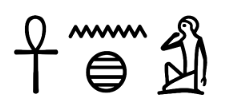
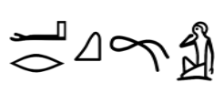

目次（全10セクション）
- セクション1: コプト語とは - 古代エジプト語の最終段階
- セクション2: 古代エジプトの誓約 - 前コプト期の誓約の特徴
- セクション3: 歴史的背景 - 誓約の歴史的文脈
- セクション4: 用語と使用法 - コプト語における誓約関連用語
- セクション5: 誓約の機能的分類 - 断言的誓約と約束的誓約
- セクション6: コプト語誓約の定型表現 - 誓約の言語的構造
- セクション7: 法的文書における誓約 - 法的コンテキストでの使用
- セクション8: 聖人による誓約 - 宗教的要素
- セクション9: アバドン——氏の天使と偽証への罰 - 誓約の神秘的側面
- セクション10: 結論 - 研究のまとめと展望
古代エジプト語の最終段階（世界最長の文字記録期間）
- 古代エジプト語は紀元前3200年頃から記録が残る言語
- コプト語はコプト文字（24のギリシャ文字＋6-8のデモティック文字）で書かれた変種で、紀元3世紀頃から標準化
- 現在までコプト正教会の典礼言語として残存
- 17世紀までに話し言葉として消滅したが、言語復興運動が存在

古代エジプトにおける誓約の基本要素
- 支配者の王、神々、あるいは両方の名において誓う
- 宗教的、道徳的、社会的側面が融合
- 誠実さを保証するために高位の権威を呼び出す
- 誓約の超自然的力への信仰に基づく
- 神罰への恐怖を通じて偽証を防ぐことを目的とする

誓約の歴史的発展と影響
- 古代エジプトの慣行
- キリスト教以前の社会における誓約の役割
- 古代エジプトにおける誓約の用語
- ᶜnḫ（文字通り：「誓約を行う、遂行する」）
- ᶜrḳ「誓う」（文字通り：「縛る」）
- グレコ・ローマンの影響
- 文化交流を通じたコプト慣行への誓約の統合
コプト語の誓約に関する語彙

コプト語の誓約に関する用語は、方言によって異なる形を持つ：
コプト語で「誓約」と訳される単語は：
- （サイード方言、ボハイラ方言）ⲁⲛⲁϣ、複数形：ⲁⲛⲁⲩϣ
- （アクミム方言）ⲁⲛⲁⳉ
- （ファイユーム方言）ⲁⲛⲉϣ、ⲁⲛⲏϣ、複数形：ⲁⲛⲏⲩϣ
コプト語以前の古代エジプト語の同等語：ᶜnḫ
「誓う、誓約する」と訳される動詞
- ⲱⲣⲕ「誓う」
- ⲧⲁⲣⲕⲟ「誓わせる、懇願する」（< 使役形 ḏj + ᶜrḳ）
- ϩⲟⲙⲟⲗⲟⲅⲉⲓ「承認する」（ギリシャ語からの借用語）
コプト語以前の古代エジプト語の同等語： ᶜrḳ
誓約の主要分類
- 断言的誓約
- 法的：法廷や公式文書で使用
- 非法的：日常的な真実の主張
- 約束的誓約
- 法的：契約や協定における約束
- 非法的：個人的な誓いや約束
断言的誓約の例
ⲉⲓϩⲟⲙⲟⲗⲟⲅⲉⲓ ⲉⲓⲱⲣ̅ ⲕ̅ ⲙⲡⲛⲟⲩⲧⲉ ⲡⲡⲁⲛⲧⲟⲕⲣⲁⲧⲱⲣ… ϫⲉ ⲡⲛ̅ ⲧⲁⲓⲧⲁⲁϥ ⲛⲁⲩ ⲁⲩⲧⲁⲁϥ ϩⲁⲣⲟⲓ̈ ⲟⲩⲙⲟⲛⲟⲛ̅
「私は全能の神に誓い...私が彼らに与えたものは、彼らが私のためだけに使ったことを承認します。」（P. CLT 1.59-63）
約束的誓約の例
ⲉⲓⲱⲣⲕ ⲛⲧⲉⲧⲣⲓⲁⲥ ⲉⲧⲟⲩⲁⲁⲃ ⲛϩⲟⲙⲟⲟⲩⲥⲓⲟⲛ… ⲉⲧⲙⲧⲣⲉⲗⲁⲁⲩ ⲛⲡⲁⲣⲁⲃⲁⲥⲓⲥ ϣⲱⲡⲉ ⲛϩⲏⲧⲥ
「私は聖なる同質の三位一体に誓う...いかなる違反も起こらないこと。」（P.KRU 38. l.53）
誓約定型表現のバリエーション
コプト語の誓約定型表現は開始句にいくつかのバリエーションがある：
- ⲉⲓⲱⲣⲉⲕ (ⲇⲉ) ⲛ-「（そして）私は誓う」
- ⲙⲁⲗⲗⲟⲛ ⲉⲓⲱⲣⲉⲕ (ⲇⲉ) ⲛ-「（そして）さらに私は誓う」
- ⲉⲓⲱⲣⲕ (ⲇⲉ) ⲙⲛⲛⲥⲱⲥ ⲛ-「（そして）私はこの後誓う」
- ⲙⲛⲛⲥⲱⲥ ⲉⲓⲱⲣⲕ ⲛ-「その後私は誓う」
- ⲉϫⲛⲛⲁⲓ ⲇⲉ ⲧⲏⲣⲟⲩ ⲉⲓⲱⲣⲕ ⲛ-「そして何よりも私は誓う」
誓約の構造的特徴
- コプト語の誓約定型表現は二つの主要部分に分けられる：
- 誓いの動詞を含む初期の主節
- この動詞を完成させる引数節
- 主な動詞はⲱⲣⲕ「誓う」、動詞ⲧⲁⲣⲕⲟ「懇願する」、動詞ϩⲟⲙⲟⲗⲟⲅⲉⲓ「承認する」
ⲉⲓⲱⲣⲕ ⲇⲉ ⲙⲛⲛⲥⲱⲥ ⲙⲡⲛⲟⲩⲧⲉ ⲡⲡⲁⲛⲧⲟⲕⲣⲁⲧⲱⲣ「そして私は誓う、この後に全能の神に...」（P.KRU 15.23-25）
ⲉⲓⲧⲁⲣⲕⲟ ⲛⲁⲣⲭⲏ ⲛⲓⲙ ϩⲓⲉⲝⲟⲩⲥⲓⲁ「私は懇願するすべての支配者とすべての権威に...」（P.CLT 4.21）
法的文書の構造における誓約の位置
- 誓約定型表現は通常、罰則定型表現の後、証人証明の前に置かれる
- CLT 4、ジェメから、アパ・パウロス修道院のパン屋に設置された臼の全額支払いを受け取ったというメルクリオスによる解放証書
法的文書における誓約の例（翻訳 CLT 4, Schiller 1932）
「私はこの文書が彼の前に持ち出されるとき、すべての役人とすべての権力に誓います。全能の神と我々を支配する主君の主権によって、それは決して侵害されることはありません。あなたの父性の安全のために、私はあなたとあなたの後継者のために、それが存在し、有効であり、それが示されるすべての場所において拘束力を持つことを、それを書いた書記の署名と信頼できる証人の理由によって、上記に述べました。私はこの方法で約束します。」
「私、ペスィンティオスの息子フィロテオスは証人です。+ 私、エポイケのスアイの息子トマスは証人です。+ 私、司祭サムエルは証人です。+」
財政紛争における誓約
O.Crum ad. 42より：
「この場所と、その力によって！キュリアコスがダニエル（彼の雇われ人）をヨセフの父親のところに送り、彼に半ソリドゥスを与え、レンズ豆に関して送ったことを確かに知っています。これはカレがヨセフのために、ヨセフの父親のための半ソリドゥスに関して誓った誓約です。コロウトス（首長）の前で、コイアク15日、インディクティオ15年。」（テキスト：W. E. クルム、訳：G. シェンケ）
知事による誓約
英国博物館パピルス1079：アムル・イブン・アル＝アースに関する誓約
パピルス英国博物館1079は、エジプトを征服したイスラム軍の初代総督アムル・イブン・アル＝アース（ヒジュラ暦43年/西暦663年没）に関連するコプト語文書。

公式誓約の内容
- 文書はチネラ村の村長フィロテオスと他の村民による公式誓約を記録
- 「神とアムルの安寧にかけて誓う」という形式を採用
- 村内の14歳以上のすべての男性を数え上げたこと
- 当局への報告から誰も除外していないことを誓約
ⲉⲓⲱⲣⲕ ⲙⲡⲛⲟⲩⲧⲉ ⲡⲁⲛⲧⲟⲅⲣⲁⲧⲱⲣ ⲙⲛⲡⲉⲩϫⲁⲓ ⲛⲁⲃⲣⲟⲥ
「私は全能の神とアブロス（アムル）の安寧にかけて誓う」
ⲉⲛⲱⲣⲕ ⲙⲡⲛⲟⲩⲧⲉ ⲡⲁⲛⲧⲟⲅⲣⲁⲧⲱⲣ ⲙⲡⲣⲁⲛ ⲙⲡⲛⲟⲩⲧⲉ ⲙⲛⲡⲉⲩϫⲁⲓ ⲛⲁⲛⲃⲣⲟⲥ
「私たちは全能の神と神の名とアブロス（アムル）の安寧にかけて誓う」
歴史的意義
- この文書は初期キリスト教-イスラム関係に関する貴重な洞察を提供
- ムスリム総督の権威がエジプト農村社会にまで及んでいたことを示す
- 誓約形式にキリスト教的要素（全能の神への言及）とイスラム支配の受容（総督の安寧への言及）が混在
- この種の国勢調査は人頭税（ジズヤ）徴収と労働徴用のために行われた可能性が高い
- 文書は征服後の行政的連続性と変化の両方を示している
聖人の名による誓約
- P.Mon.Epiph. 162は6-7世紀の手紙で、テーベ（上エジプト）のエピファニオス修道院から出土
- ヨハネという聖人の名による誓約が記録されている
ⲉⲁⲓⲱⲣⲕ ⲙⲡϩⲁⲅⲓⲟⲥ ⲱϩⲁⲛⲛⲏⲥ ϫⲉ ⲙⲁⲃⲱⲕ ⲉⲡϣⲙⲙⲟ
「私は聖ヨハネによって誓った、私は外国に行くことができないと」（Gesa Schenke, Cult of Saints, E02438）
教会による誓約
ⲉⲓⲱⲣⲕ ⲙⲡⲛⲟⲩⲧⲉ ⲡⲡⲁⲛⲧⲱⲕⲣⲁⲧⲟⲣ ⲙⲛ ⲧⲕⲁⲑⲟⲗⲓⲕⲏ ⲛⲉⲕⲗⲏⲥⲓⲁ ⲙⲛ ⲡⲉⲩϫⲁ ⲙⲡⲉⲑⲣⲟⲛⲟⲥ ⲙⲡⲉⲛⲉⲓⲱⲧ ⲙⲁⲣⲕⲟⲥ ⲡⲉⲩⲁⲛⲕⲉⲗⲓⲥⲧⲏⲥ ϫⲉ ⲛⲛⲉ ⲉⲃⲟⲗ ⲉⲡⲓϩⲱⲃ ϣⲁ ⲉⲛⲉϩ
「私は全能の神と普遍教会と我らが父である福音記者マルコスの玉座の安全にかけて誓う、私は決してこの事柄に関して行動しないことを」（Gesa Schenke, Cult of Saints, E04038）
聖人崇敬と誓約の関係
- コプト・キリスト教の中で聖人は特別な仲介者としての役割を担っていた
- 聖人の名による誓約は、その聖人の霊的権威と保護を求める行為
- 誓約を破ることは聖人に対する冒涜とみなされ、超自然的な罰を招くと信じられていた
- 聖人の祠や聖遺物の前で行われる誓約は特に神聖かつ拘束力が強いとされた
コロウトス聖人の伝記における偽誓の例
アンティノオポリスの医師・殉教者コロウトスの賛辞（7世紀）には、金貸しに騙そうとした書記の物語が含まれている。書記は聖コロウトスの前で偽証を行ったため、「偽りの誓いをした男は全身が膨れ上がり、太陽が沈む前に死んだ。彼は運び去られ埋葬された」という悲惨な結末を迎えた。
アバドンの図像表現
- おそらく10世紀頃の絵画
- 1899年にファイユームの教会で発見された壁画
- ワニのような顎を持つ悪魔的な姿で描かれている
- 壁画には複数の罪人への罰が描かれている
偽証者への罰
ⲡⲉⲧⲟⲣⲉⲕ ⲛⲛⲟⲩϫ「偽って誓う者」と書かれた人物が描かれており、アバドンがその腸を引き出している場面が示されている
この壁画には他にも「労働者から給料を奪う人」（ⲡⲣⲱⲙⲉ ⲉϥⲃⲓ ⲙⲡⲃⲩⲕⲏ ⲛⲛⲉⲣⲕⲁⲧⲏⲥ）への罰も描かれており、社会的・宗教的規範に対する違反への超自然的罰を視覚的に表現している。
神罰のコンセプト
- アバドンは聖書的概念で、ヘブライ語で「破壊」を意味する
- 黙示録では底なしの淵の天使として登場（黙示録9:11）
- コプト教会の伝統では特定の罪に対する罰を執行する存在として描かれる
- 特に偽証・偽誓は、神の名を冒涜する重大な罪として認識されていた
- この図像表現は社会的抑止力として機能していたと考えられる
関連する壁画と写本
偽誓と神罰の関係性を示す類似の図像表現は、他のコプト修道院やパピルスにも見られる。特にハイデルベルク魔術パピルス（P.Heid.Kopt. Inv. 686、10世紀）には、誓約違反に対する呪いと罰が詳細に記述されている。
P. Kell. Copt. 35：「主パラクレートによる誓約」
P. Kell. Copt. 35は、カップルを別れさせる目的の魔術呪文を含む手紙です。この文書は、魔術的文脈における誓約の使用方法と重要性を示す貴重な例です。
誓約を含む手紙の内容
ⲉⲓⲱⲣⲕ ⲛⲁⲕ ⲙⲡϫⲟⲉⲓⲥ ⲡⲡⲁⲣⲁⲕⲗⲏⲧⲟⲥ ⲙⲛ ⲡⲥⲟⲟⲩⲛ ⲛⲧⲙⲉ...
「私はあなたに主パラクレートス（=マニ）と真理の知識にかけて誓います...」

手紙の著者はユダヤ教-キリスト教の神に祈りを捧げた後、呪文を書き、兄弟に宛てて次のように述べています：
「私はあなたに温かい挨拶を送り、長い間あなたの幸福を祈ります。私が再び肉体であなたを抱きしめ、私の喜びが完成するまで。私は主パラクレートスと真理の知識にかけて誓います。これは私の近くで見つけたものであり、急いでこれを書き、あなたに送りました。なぜなら、もう一つは小さなパピルスの断片に書かれており、私はそれを見つけることができなかったからです。」（キプリアノス・データベースより）
マニ教魔術文書における誓約の役割
- 魔術的文脈での誓約は呪文の効力を高める働きがある
- 神聖な力を呼び出すために使用される
- 呪文の伝達の真正性を保証する手段
- 魔術師と受け手の間の信頼関係を強化する
- 特に「パラクレートス（=マニ）」への言及は、マニ教的要素を示唆している
コプト語誓約の社会的・宗教的重要性
- コプト語文書における誓約は古代エジプトの伝統とグレコ・ローマン及びキリスト教の影響が融合した制度
- 法的文書では契約の信頼性と拘束力を確保する役割を担っていた
- 誓約の形式は文脈によって多様だが構造的特徴は一貫している
- 言語的形式は複数の方言に渡って確認され、文化的重要性を示している
- 誓約違反に対する超自然的・世俗的制裁の恐怖が社会秩序維持に貢献
- 聖人崇敬と誓約制度の融合はコプト・キリスト教独自の特徴
今後の研究展望
- 未発表のコプト語パピルスや文書の継続的発掘と解読
- イスラム支配下における誓約慣行の変容と継続性の検証
- ビザンティン帝国および中東の他のキリスト教共同体との比較研究
- 誓約違反に対する超自然的罰の概念の発展と変遷の分析
- コプト語誓約文書の言語学的・文体的特徴のさらなる研究
一次資料（パピルス・文書集）
- P. CLT = Schiller, Arthur. Ten Coptic Legal Texts. 1932.
- P. KRU = Till, Walter C. Koptische Rechtsurkunden der Ptolemäerzeit. 1935.
- P. Lond. = British Museum Papyrus Collections. Various, ongoing.
- P. Mich. = Michigan Papyri. Various, ongoing.
- P. Mon. Epiph. = Crum, W. E. and G. Steindorff. The Monastery of Epiphanius at Thebes. 1926.
研究書・論文
- Hagedorn, Dieter. Coptic Legal Documents of the Fatimid and Ayyubid Periods. 1978.
- Kahle, Paul E. Bala'izah: Coptic Texts from Deir El-Bala'izah. 1954.
- Keenan, James G. "Byzantine Egyptian Land Law and the Coptic Legal Tradition." 1980.
- Kruse, Thomas. "Coptic Contracts of Sale and Lease." 2005.
- Massa, Lorenzo. The Oath in Coptic Legal Documents. 2018.
- Papaconstantinou, Arietta. Coptic Legal and Administrative Documents from Theban and Oxyrhynchite Monasteries. 2001.
- Schenke, Gesa. Coptic Legal and Documentary Texts from the Monastery of Apollo at Bawit. 2017.
- Sijpesteijn, Petra M. Shaping a Muslim State: The World of a Mid-Eighth-Century Egyptian Official. 2013.
- Walters, C. C. Monastic Archaeology in Egypt. 1989.
- Wipszycka, Ewa. Economic Life in Byzantine Egypt. 2011.
- Dosoo, Korshi. "Ritual Power: Using Curses in the Coptic Magic." 2019.